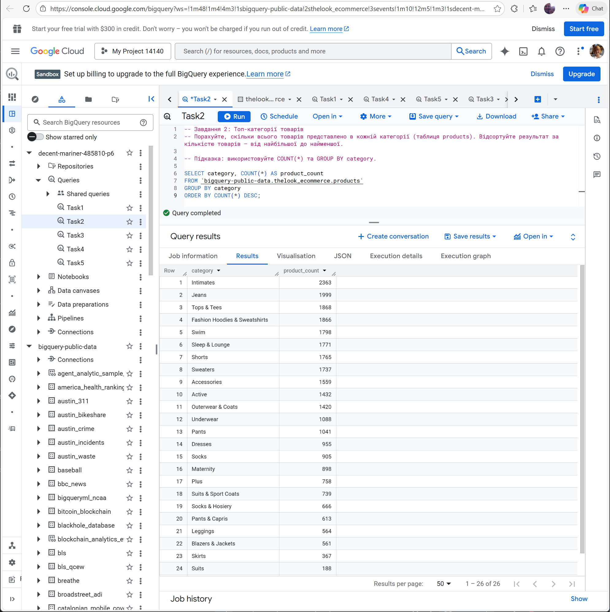
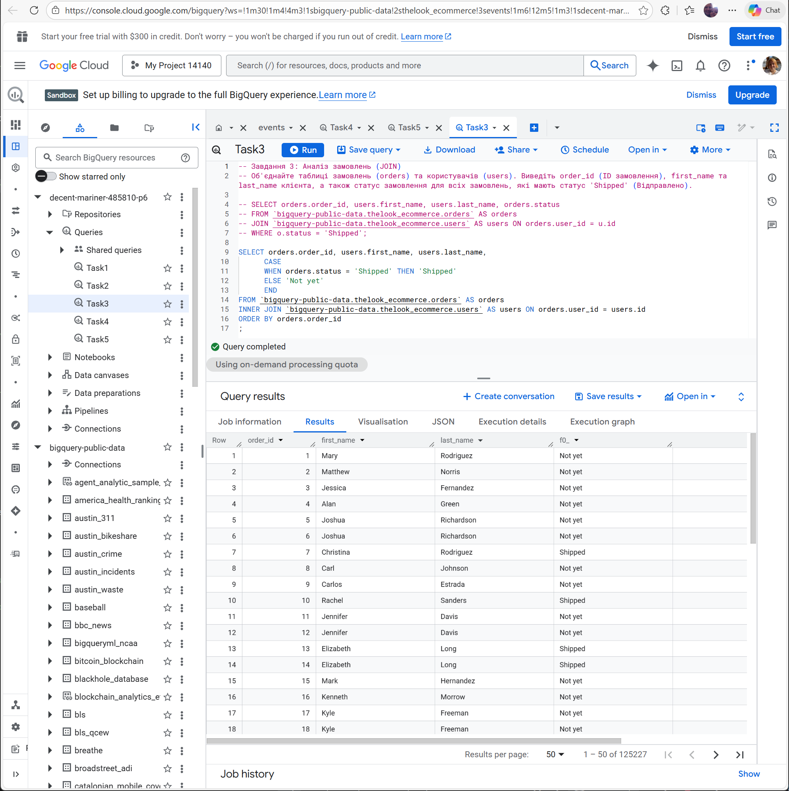
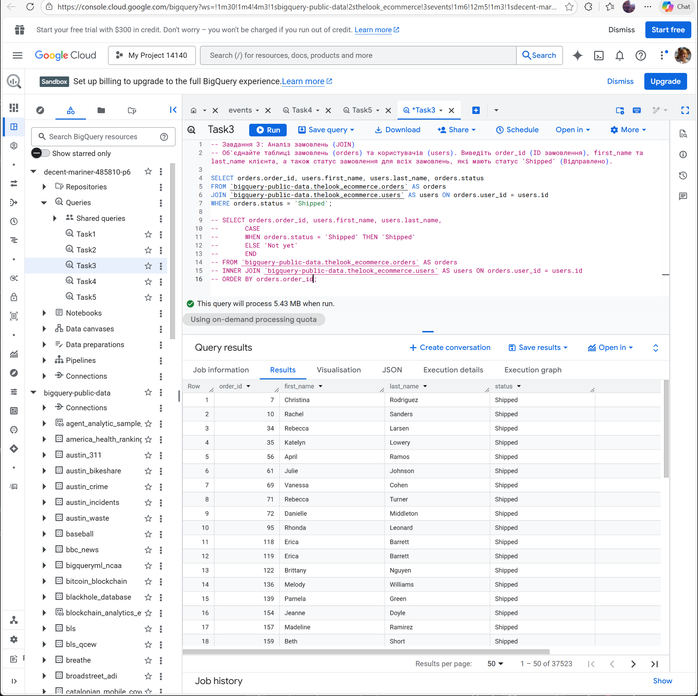
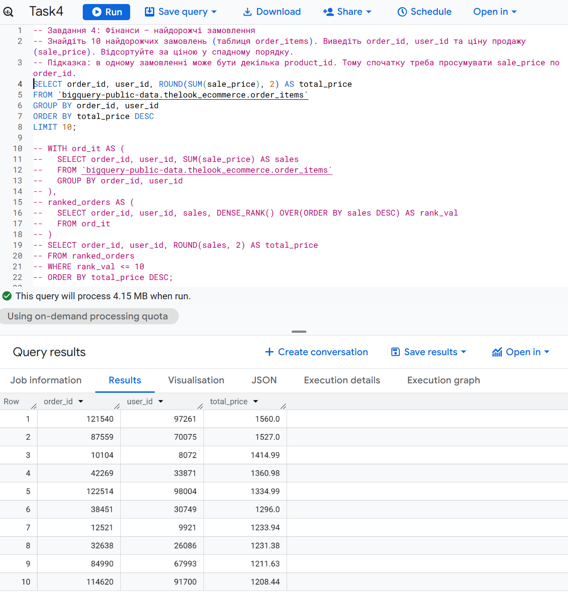
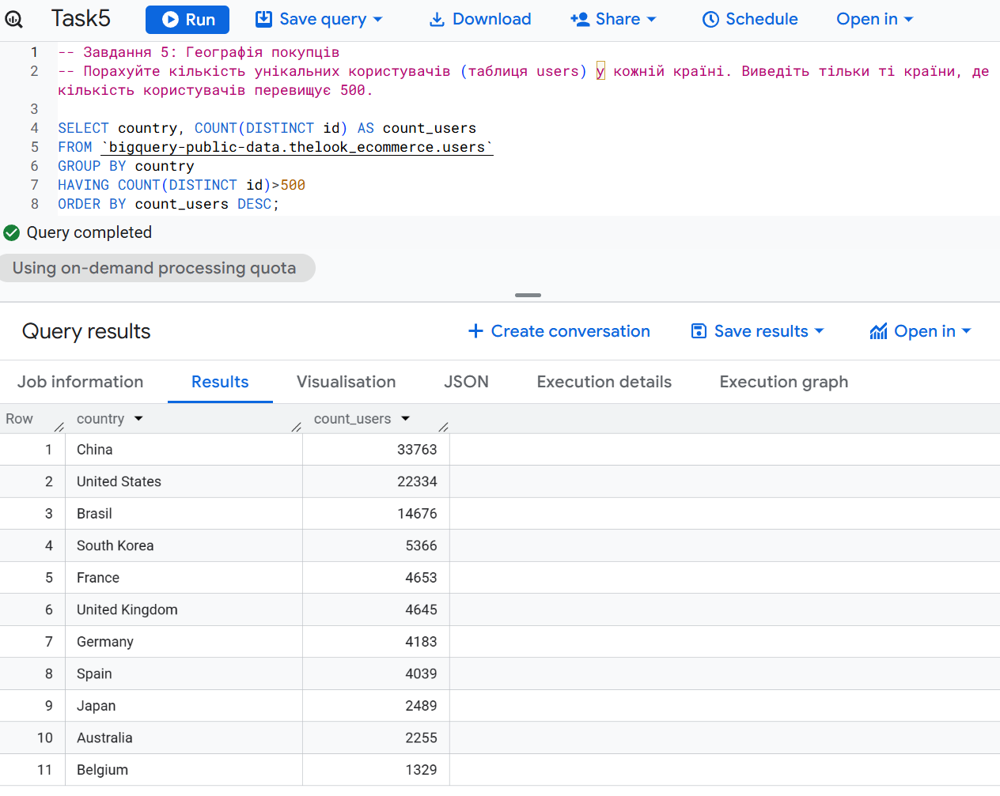
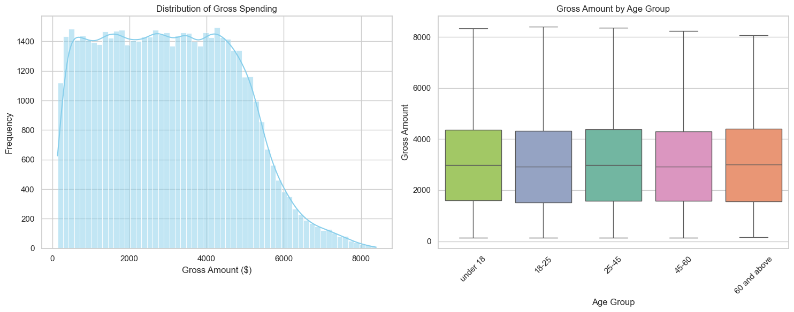
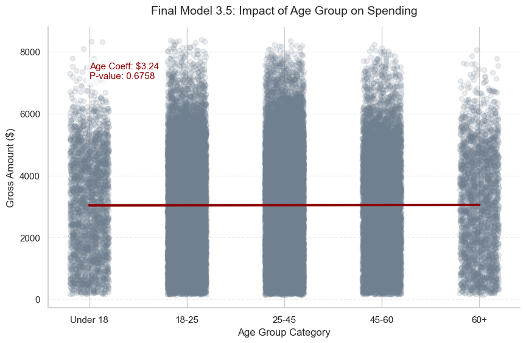
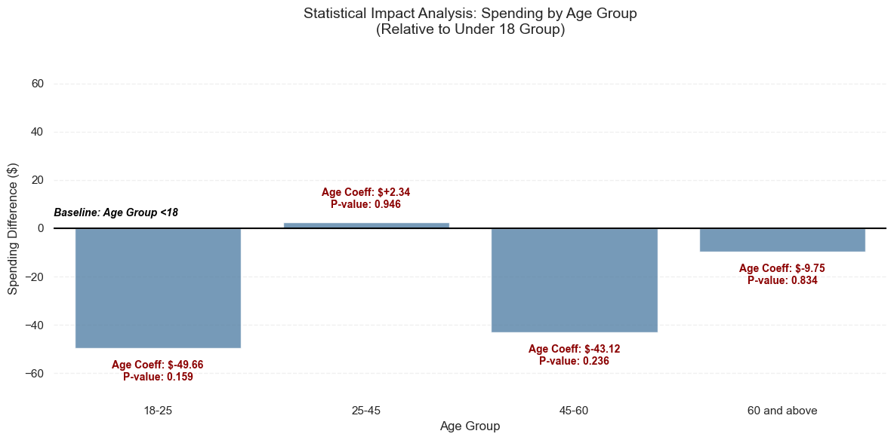

Блок 1: SQL-запити до даних (BigQuery)
Завдання 1: Користувачі з Бразилії, зареєстровані у 2023 році

Завдання 2: Загальна кількість товарів за категоріями

Завдання 3: Аналіз відправлених замовлень (об’єднання таблиць)


Завдання 4: Фінансовий аналіз — найдорожчі замовлення

Завдання 5: Географія клієнтів

Блок 2: Аналітичні панелі Tableau та висновки
Інтерактивна аналітична панель бізнес-показників
Блок 3: Статистичний аналіз та предиктивна аналітика
1. Попередній аналіз (EDA) та перевірка якості даних
Під час первинного дослідження у полі Net Amount було виявлено 613 від’ємних значень.
Порівняльна візуалізація розподілу до та після очищення продемонструвала відсутність суттєвої різниці у структурі даних.
З огляду на це було прийнято рішення видалити ці записи для забезпечення стабільності моделей.
Для прогнозування використано показник Gross Amount.
Початкове дослідження

Розподіл після очищення
2. Методологія дослідження та підготовка ознак
На цьому етапі було підготовлено три варіації незалежних змінних (X) для визначення найбільш значущих предикторів для суми чека (Gross Amount, y):
- 1. Числове представлення (Ранг): Категорії віку перетворені на числові ранги (від 1 до 5) для перевірки наявності лінійної прогресії у витратах.
- 2. Категоріальне представлення (One-Hot Encoding): Вікові групи перетворені на бінарні змінні. Група «до 18 років» використана як базова лінія для вимірювання відносного впливу інших груп.
- 3. Багатофакторний аналіз (Broad Scope): Комплексний набір даних, що включає стать, категорію товару та метод оплати для оцінки сукупної прогностичної сили не демографічних факторів.
3. Порівняльна таблиця моделей
| # | Модель | R² | MAE | Ключові результати | Висновок |
|---|---|---|---|---|---|
| 3.1 |
Simple Linear Regression (Numeric Age) |
-0.00016 | $1433.87 |
Intercept: 3020.00 Age = 8.86 p-value = 0.3073 |
Вік не має статистично значущого лінійного впливу на витрати. |
| 3.2 |
Linear Regression (Categorical Age) |
0.00008 | $1433.68 |
Intercept: 3060.88 Усі p-value > 0.15 |
Статистично значущих відмінностей між віковими групами не виявлено. |
| 3.3 |
Random Forest (Categorical Age) |
0.00007 | $1433.68 |
Середній прогноз: $3045.47 Важливість ознак розподілена рівномірно |
Модель підтверджує дуже низьку прогностичну силу віку. |
| 3.4 |
Multiple Linear Regression (All Features) |
-0.00059 | $1433.99 |
PhonePe UPI: +129.60 (p=0.008) Gender_Other: +44.70 (p=0.021) Intercept: 2965.07 |
На витрати впливають платіжний метод та демографічні фактори, але не вік. |
| 3.5 | Final Numeric Validation | 0.00000 | $1438.57 |
Age = 3.24 p-value = 0.6758 |
Підтверджено вкрай слабкий числовий ефект віку. |
| 3.6 | Final Categorical Validation | 0.00020 | $1438.41 | Усі вікові групи статистично незначущі | Остаточне підтвердження: вікова категорія не впливає на витрати. |
4. Статистичні інсайти та висновки
Графік числової регресії

Графік категоріального порівняння

Аналіз показав, що вік клієнта не має статистично значущого впливу на величину середнього чека. Значення R² у всіх побудованих моделях наближене до нуля, що свідчить про відсутність реальної пояснювальної сили вікового фактора в даному наборі даних.
Єдиний статистично значущий ефект виявлено у моделі множинної регресії: використання платіжного методу PhonePe збільшує середній чек приблизно на 130 доларів (p-value = 0.008). Це вказує на те, що технічні та поведінкові аспекти оплати важать більше, ніж демографія.
Вік є статистично незначущим фактором. Побудова маркетингової стратегії виключно на вікових групах є неефективною. Фокус доцільно змістити на оптимізацію платіжних екосистем та глибокий аналіз поведінкових характеристик (LTV, частота покупок, методи оплати), які мають реальний вплив на прибутковість.